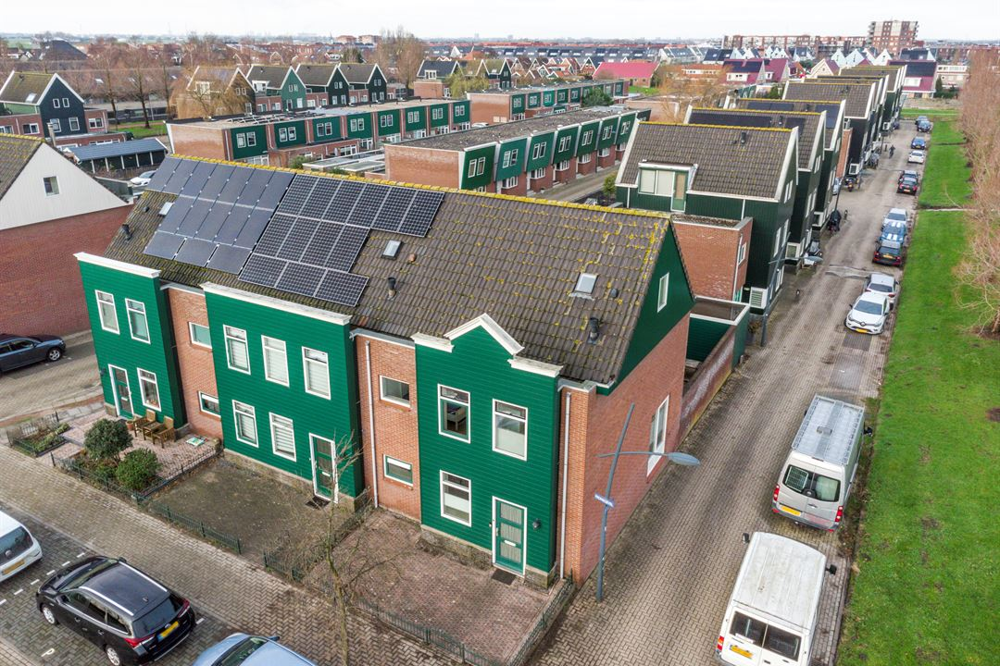
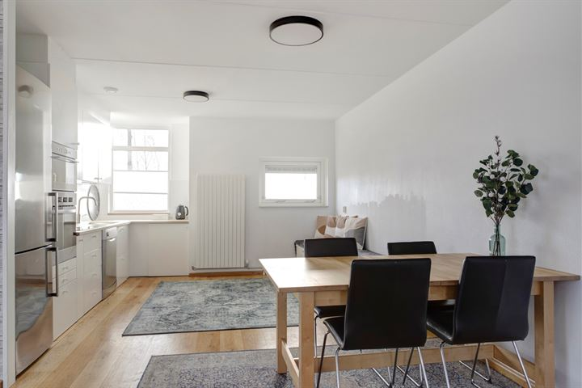
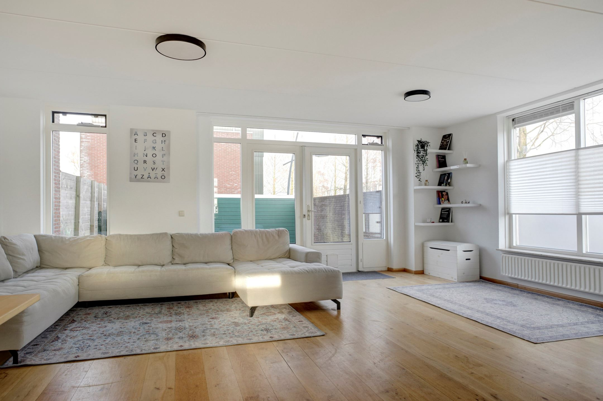
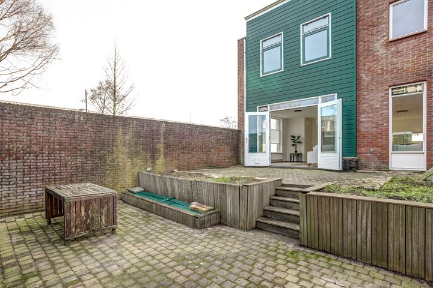
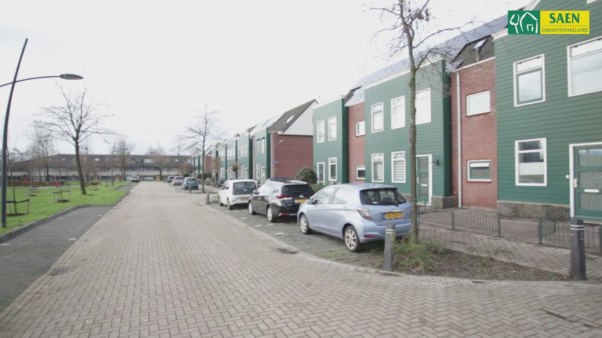
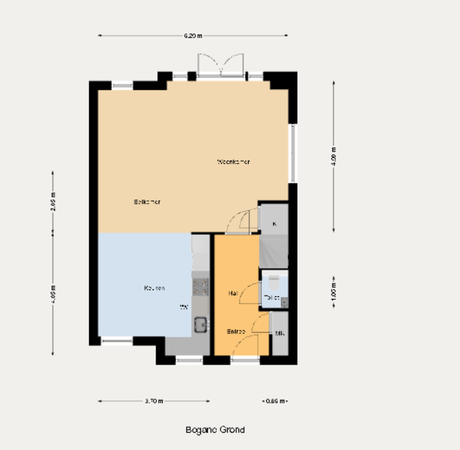
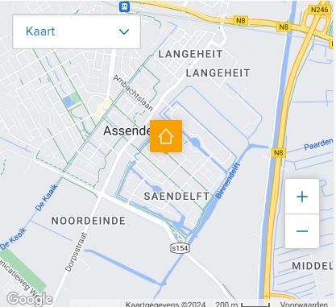

-

plattegrond
-
360
-
video
-
47 fotos
pronkgevel1
1566 LN Assendelft
136m² 164m² 4 slaapkamers450.000 k.k
Omschrijving
Een pronkgevel is een gevel van een gebouw, dat is ontworpen om te imponeren. Het betreft meestal de voorgevel van een gebouw, waarbij er veel aandacht is besteed aan de architectuur, er zijn betere materialen gebruikt en decoraties benadrukken de belangrijkste onderdelen. Deze mooie omschrijving
Kenmerken
overdracht
- vraagprijs
- € 450.000 kosten koper
- Vraagprijs per m²
- € 3.309
- Aangeboden sinds
- Log in om te bekijken
- Status
- Beschikbaar
- Aanvaarding
- In overleg
bouw
- Soort woonhuis
- Eengezinswoning, hoekwoning
- Soort bouw
- Bestaande bouw
- Bouwjaar
- 2001
- Soort dak
- Zadeldak bedekt met pannen
- Aanvaarding
- In overleg
Wat is jouw huis waard?
Krijg direct inzicht in de waarde en populariteit van je huis door je adres toe te voegen in Mijn Huis.
activities
Aantal keer gezien
Toegevoegd aan favorieten
op funda sinds:
buurt
| waterrijk | |
|---|---|
| inwoners | w5610 |
| Gezin met kinderen | 55% |
| Gem. vraagprijs / m² | € 3.692 |
| meer over |
In de buurt

reistijd
Bekijk hoe lang je onderweg bent
Locatie toevoegenadvertentie makelaar
grootte-advertiente